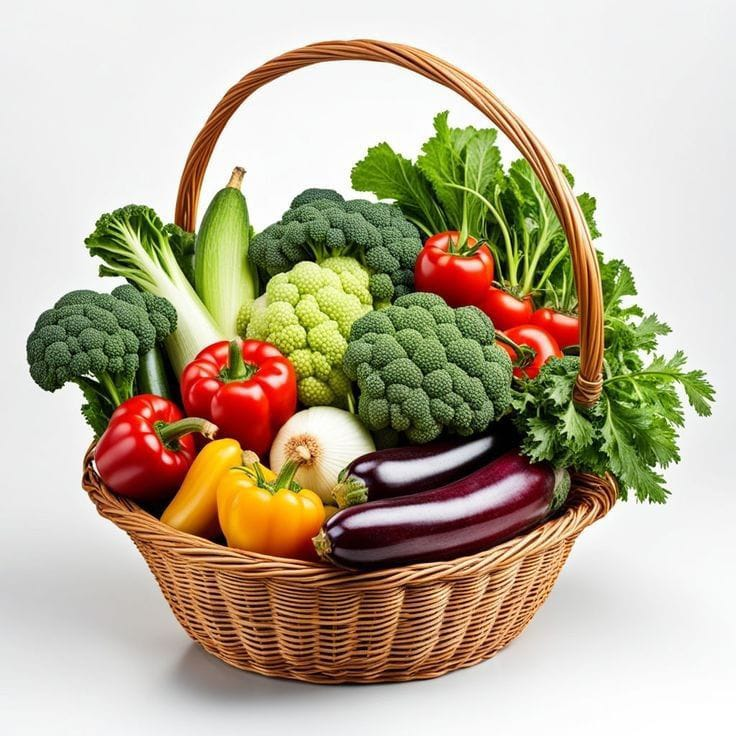
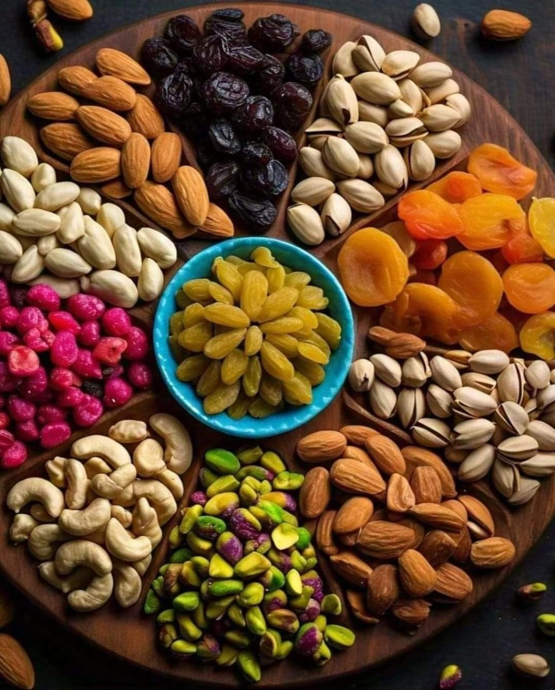
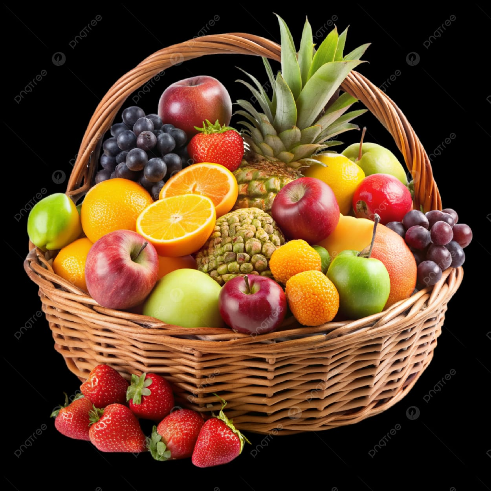
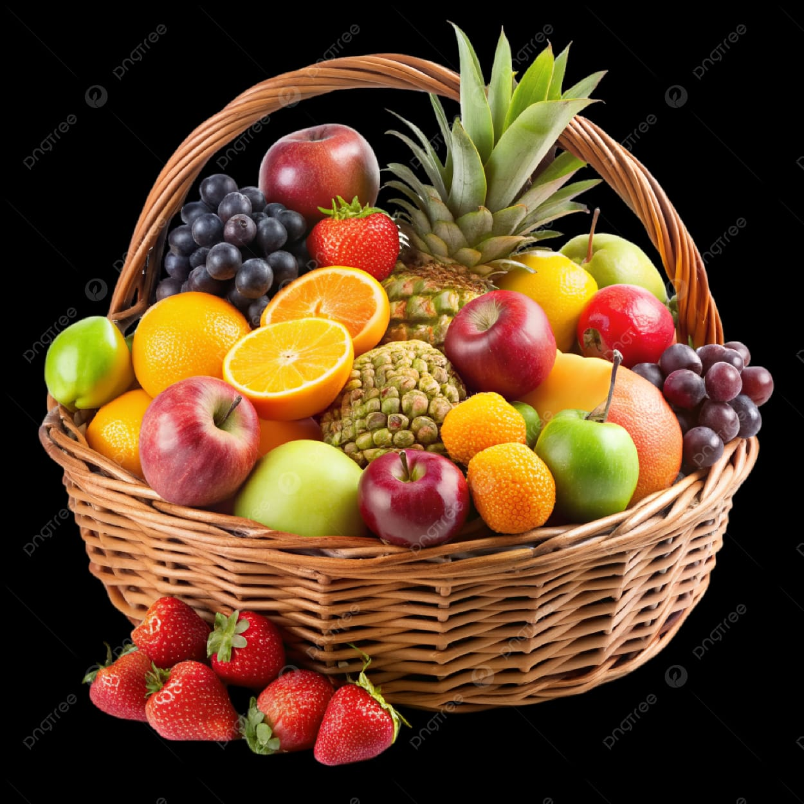
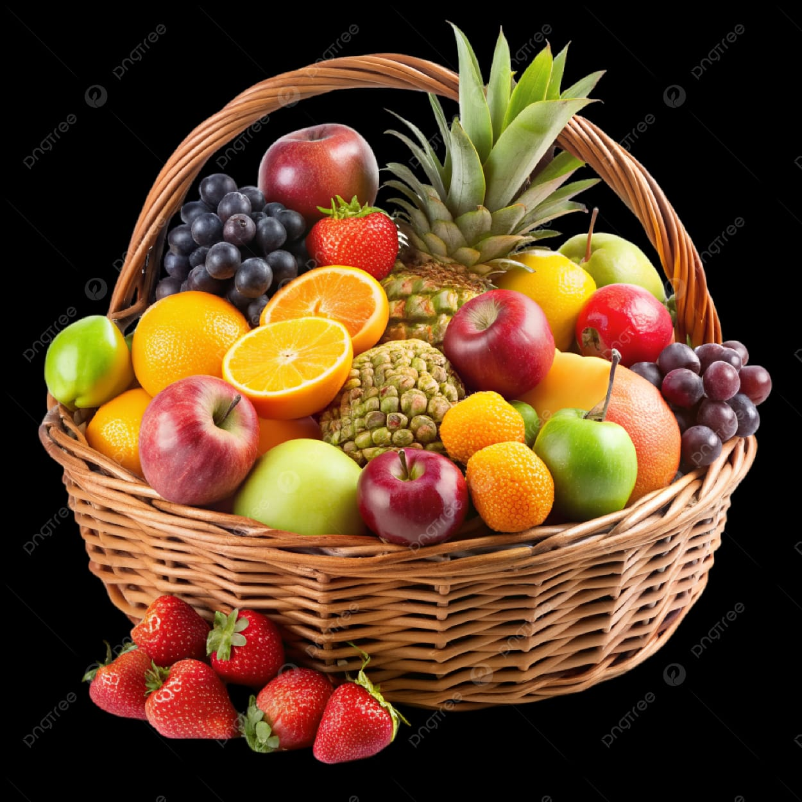

Organic farming is a method of agriculture that relies on natural processes, biodiversity, and cycles adapted to local conditions, rather than the use of synthetic inputs like chemical fertilizers and pesticides. "We strictly follow organic practices approved by the National Programme for Organic Production (NPOP). Our crops are grown without chemical pesticides, synthetic fertilizers, or GMOs.farming is a method of agriculture that relies on natural processes, biodiversity, and cycles adapted to local conditions, rather than the use of synthetic inputs like chemical fertilizers and pesticides."
Organic Products



 

